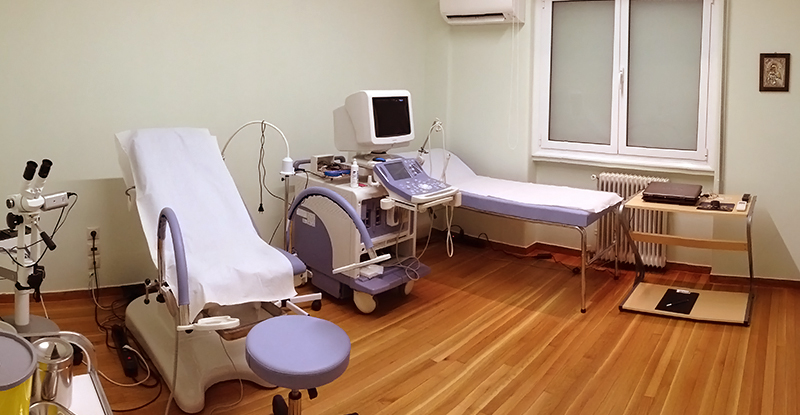

ΣΤΥΛΙΑΝΟΣ Γ. ΔΕΤΟΡΑΚΗΣ ΜD, MSc
ΜΑΙΕΥΤΗΡΑΣ - ΧΕΙΡΟΥΡΓΟΣ - ΓΥΝΑΙΚΟΛΟΓΟΣ ΣΤΗΝ ΑΘΗΝΑ
Το ιατρείο του χειρουργού - μαιευτήρα - γυναικολόγου Δετοράκη Στυλιανού βρίσκεται στο κέντρο της Αθήνας και συγκεκριμένα στην οδό Βασιλίσσης Σοφίας 54.
Ο γυναικολόγος Δετοράκης Στυλιανός είναι πτυχιούχος της Ιατρικής Σχολής Αθηνών και υποψήφιος Διδάκτωρ του Πανεπιστημίου Αθηνών. Από τον Ιούνιο του 2014 είναι επιστημονικός συνεργάτης του τμήματος Γυναικολογικής Ενδοσκόπησης της Α΄ Μαιευτικής και Γυναικολογικής Κλινικής του Πανεπιστημίου Αθηνών, στο Νοσοκομείο Αλεξάνδρα.
Εκτός από το ιδιωτικό ιατρείο το οποίο διατηρεί, είναι συνεργάτης των μαιευτηρίων ΙΑΣΩ και ΛΗΤΩ.
Με ολοκληρωμένες σπουδές και συνεχή επιμόρφωση σε ιατρικά και γυναικολογικά ζητήματα προσφέρει υψηλού επιπέδου ιατρικές υπηρεσίες, έγκυρη διάγνωση και υπεύθυνη συμβουλευτική για γυναικολογικές παθήσεις αλλά και για την ομαλή εξέλιξη της εγκυμοσύνης σε κάθε στάδιο. Ειδικεύεται στην γυναικολογική ενδοσκόπηση καθώς και στους εξής τομείς:

Το σύγχρονο γυναικολογικό του ιατρείο είναι πλήρως εξοπλισμένο με τελευταίας τεχνολογίας μηχανήματα.
- Μαστολογία
- Υπογονιμότητα
- Ουρογυναικολογία
- Παθολογία Τραχήλου
- Κύηση - Κύηση Υψηλού κινδύνου
- Λαπαροσκόπηση
- Υστεροσκόπηση
Το σύγχρονο γυναικολογικό του ιατρείο είναι πλήρως εξοπλισμένο με τελευταίας τεχνολογίας μηχανήματα (κολπικός και κοιλιακός υπέρηχος, κολποσκόπιο, Laser).
Πατήστε εδώ για να δείτε ένα συνοπτικό βιογραφικό μου.Επικοινωνία
- Διεύθυνση Λεωφόρος Βασιλίσσης Σοφίας 54, Τ.Κ. 11528, Αθήνα
- Ώρες λειτουργίας TO ΙΑΤΡΕΙΟ ΛΕΙΤΟΥΡΓΕΙ ΚΑΘΗΜΕΡΙΝΑ 17.00 - 21.00
- Τηλέφωνα 210 7222 022 6972 292 895
- Email stylianos.detorakis@gmail.com